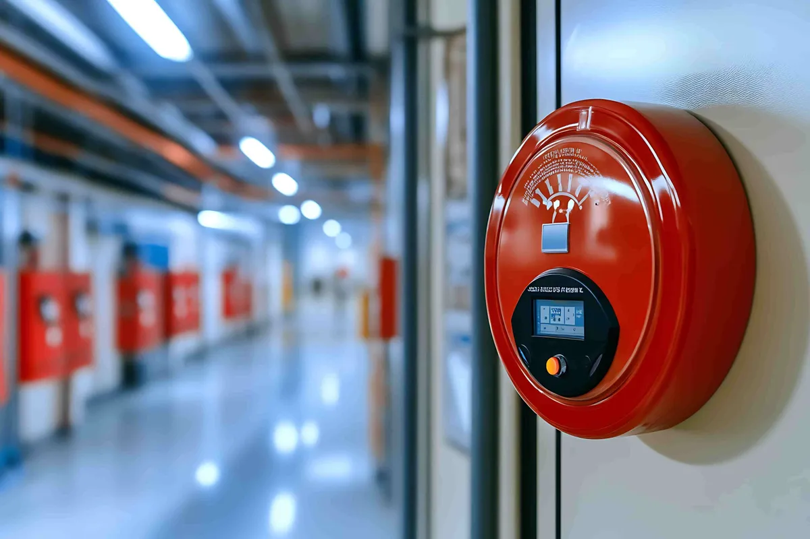

Selecting the appropriate fire safety products is not only about ticking off a box but an important step towards saving your lives and properties. As a property owner, facility manager, or any other professional in the UAE seeking information regarding Fire Alarm Sounders and reputable Fire Alarm Cable suppliers, here is what you need to know.
Why Fire Alarm Sounders and Cables Matter More Than You Think
The effectiveness of a fire alarm system depends on how efficient its components work. Building owners usually buy expensive detectors and control panels without realizing that there are two other equally important things that should be considered, which are the sounders for alerting people and cables carrying the signals. Inferior Fire Alarm Sounders or low-quality cables will result in delayed fire detection.This is exactly where working with a certified supplier becomes essential rather than optional.
What Are Fire Alarm Sounders and Why Are They Critical?
Fire alarm sounders are the audible alert devices that warn occupants when smoke or heat is detected.
Unlike a standard alarm, sounders are engineered to:
- Produce sound levels loud enough to be heard over ambient noise (typically above 65 dB)
- Function reliably in both residential and commercial environments
- Integrate seamlessly with addressable and conventional fire alarm panels
- Operate consistently even during power fluctuations
In purchasing the Fire Alarm Sounders, always ensure that they have Civil Defense approval and are compatible with your panel system. It is among the most expensive mistakes that property owners make.
How Do Fire Alarm Cables Suppliers Impact System Reliability?
It’s easy to assume “a cable is just a cable,” but fire-rated cabling is a specialized category.
Reputable Fire Alarm Cables Suppliers provide cables that are:
- Fire-resistant and capable of maintaining circuit integrity during a fire
- Compliant with NFPA and UAE Civil Defense wiring standards
- Rated for the specific voltage and signal requirements of your alarm system
- Tested for durability in high-heat or high-humidity conditions common in the UAE climate
If your wiring fails before your alarm sounds, the entire system becomes ineffective — regardless of how advanced your detectors are.
Fire Alarm Sounders vs Fire Alarm Cables: What’s the Difference?
It helps to understand how these two components work together rather than in isolation:
Fire Alarm Sounders vs Fire Alarm Cables
Function:
- Fire Alarm Sounders: Alerts occupants audibly
- Fire Alarm Cables: Carries signal between devices and panel
Failure Risk:
- Fire Alarm Sounders: Silent alarm, no warning
- Fire Alarm Cables: Signal loss, delayed or no detection
Compliance Standard:
- Fire Alarm Sounders: Civil Defense approved sound devices
- Fire Alarm Cables: Fire-rated, NFPA/Civil Defense compliant wiring
Maintenance Need:
- Fire Alarm Sounders: Periodic testing of sound output
- Fire Alarm Cables: Inspection for insulation damage/wear
To put it briefly – sounders serve as the “voice” of your fire alarm system whereas cables form the “nervous system”. Both of them need to be purchased from an authorized supplier.
Don’t Forget the Hose Reel Cabinets Supplier Factor
While alarms and detection are the focus of attention, firefighting tools have their importance as well. With a Hose Reel Cabinets Supplier at your disposal, you can rest assured that your facility is equipped with appropriately fitted, easy-to-access, and DCD compliant hose reels.
When evaluating a Fire Hose Reel Cabinets supplier, check for:
- Corrosion-resistant cabinet material suited to UAE weather conditions
- Correct hose length and pressure rating for your building size
- Easy-access placement compliant with Civil Defense guidelines
- Regular maintenance and inspection support post-installation
Buildings that pair certified alarm systems with properly installed Fire Hose Reel Cabinets are significantly better positioned to pass Civil Defense inspections and respond effectively to real emergencies.
How Do You Choose the Right Supplier?
Not all suppliers are created equal, and the fire safety market in the UAE has no shortage of options.
Here’s a practical checklist before you commit:
- Check certifications — Confirm Civil Defense approval on every product category
- Compare product range — A supplier offering sounders, cables, and cabinets under one roof simplifies procurement and ensures compatibility
- Read verified reviews — Look beyond star ratings; read what clients say about installation quality and after-sales support
- Ask about maintenance contracts — Ongoing servicing is as important as the initial purchase
- Avoid the first advertisement you see — Take time to compare at least two or three suppliers before deciding
This is precisely what LockShield Cart was designed for. Being a UAE based company dealing in fire protection equipment, LockShield Cart features an extensive range of products ranging from Fire Alarm Sounders to Fire Alarm Cable Suppliers and Fire Hose Reel Cabinet, all conforming to Civil Defense approved standards.
Result-Oriented Buying: What You Should Walk Away With
By the end of your supplier research, you should be able to confidently answer:
- Is this supplier Civil Defense certified for every product I’m buying?
- Do they offer both supply and installation, or just one?
- Can they support ongoing maintenance and AMC (Annual Maintenance Contracts)?
- Do they carry a full range — sounders, cables, and hose reel cabinets — so I’m not juggling multiple vendors?
If the answer is yes across the board, you’ve likely found a supplier worth committing to.
Frequently Asked Questions
Q1: What is the difference between conventional and addressable fire alarm sounders?
Conventional sounders operate on a zone basis, while addressable sounders can be individually identified and controlled from the panel, offering more precise fault detection.
Q2: Are fire alarm cables different from regular electrical cables?
Yes. Fire alarm cables are specifically rated to maintain circuit integrity under high heat, unlike standard electrical wiring which can fail quickly in a fire.
Q3: How often should fire hose reel cabinets be inspected?
Civil Defense guidelines generally recommend inspection at least once a year, though high-traffic commercial buildings may require more frequent checks.
Q4: Can I buy fire alarm sounders and cables from the same supplier as my hose reel cabinets?
Yes, and it’s recommended. Sourcing from one certified supplier like LockShield Cart reduces compatibility issues and simplifies maintenance scheduling.
Q5: Is Civil Defense approval mandatory for all fire safety equipment in the UAE?
Yes. Any fire alarm, sounder, cable, or firefighting equipment installed in residential or commercial buildings must meet Civil Defense approval standards.
Final Thoughts
It is one of those sectors where compromises can never make any sense. In case you are dealing with Fire Alarm Sounders or Fire Alarm Cables Suppliers or even with your Hose Reel Cabinets Supplier, the thing that matters most is to opt for certified products.
As long as you are looking at suppliers, you need to be able to confirm certification, product line-up, and customer reviews before making any decisions. It is this commitment to customer service that makes LockShield Cart stand out in the UAE; offering certified products and compliance with fire safety standards, along with great customer service. It may be useful to contact us to find out about your needs.